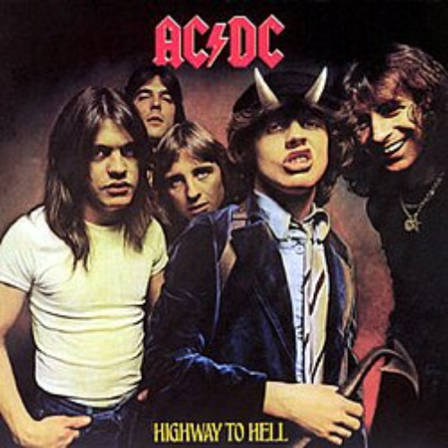
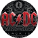

Highway to Hell

Álbum • 1979 •

ac/dc
1 - Highway to Hell
2 - Girls Got Rythm
3 - Walk All Over You
4 - Touch Too Much
5 - Beating Around the Bush
6 - Shot Down in Flames/p>
7 - Get it Hot
8 - If you want Blood
9 - Love Hungry Man
10 - Night Prowler
3:28
3:24
5:10
4:27
3:56
3:23
2:35
4:35
4:18
6:28
1B
39M
75M
125M
9M
45M
5M
96M
7M
28M
Sobre
Highway to Hell é o sexto álbum de estúdio banda australiana AC/DC, lançado a 27 de julho de 1979. É também o último álbum com o vocalista Bon Scott junto com a banda antes de sua morte em 1980. Este álbum está na lista dos 200 álbuns definitivos no RockandRollHallofFame.
Em 2003, o álbum atingiu o nº 58 da revista Rolling Stone, da lista dos 500 melhores álbuns de todos os tempos.